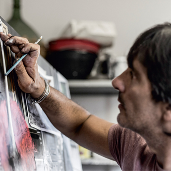

Работы


 Продано
Продано Продано
Продано


 Продано
Продано


 Продано
Продано

Анджело Аккарди родился в 1964 году в городе Сапри, провинция Салерно. Учился в Академии изящных искусств в Неаполе. В начале 1990-х основал собственную студию живописи и скульптуры рядом с домом. Сегодня искусство Аккарди — магические композиции современной жизни: городские пейзажи, чаще ироничные и сюрреалистичные. Художник участвовал в многочисленных персональных и групповых выставках в Италии и по всему миру; работы — в частных коллекциях Европы, США и Азии.
ПроданоПроданоПроданоПроданоИнтересует работа?
Доступ в галерею — по предварительной записи.
Записаться на просмотр